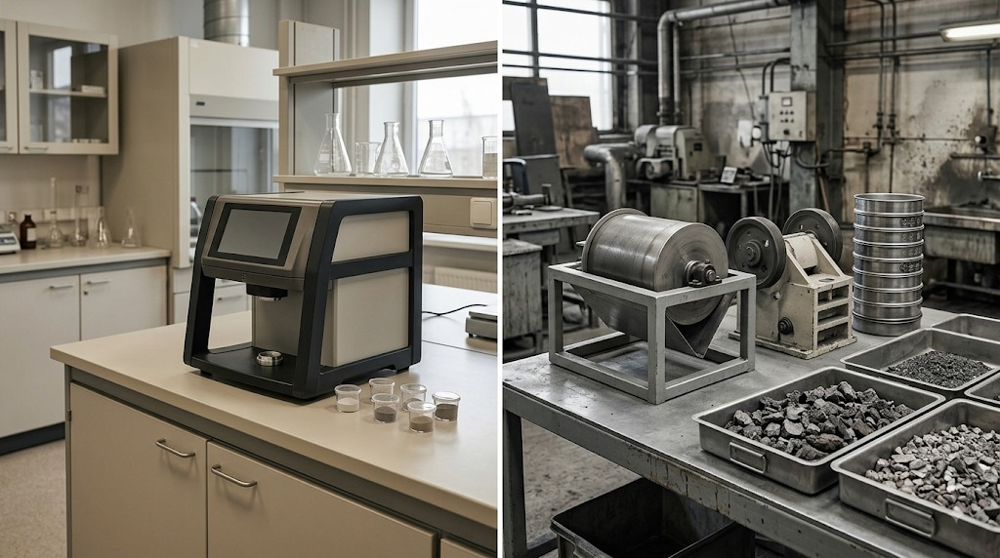
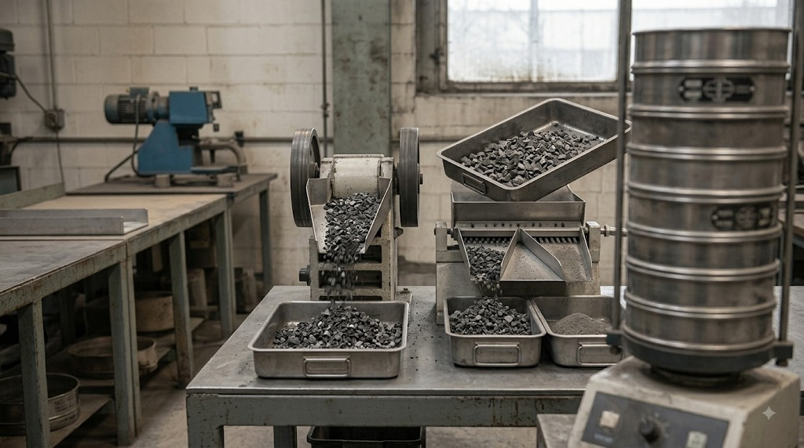

Plant laboratory methods are optimised for melt control and have limitations in recovery tasks. X-ray fluorescence is fast but does not determine light elements. Classical wet chemistry is accurate but too slow and costly for bulk testing.
Processing projects critically depend on mineral processing equipment: magnetic separators of different intensities, gravity apparatus, and induction furnaces for remelting samples. A plant laboratory usually has no instrumentation for crushability and abrasiveness indices.
We engage independent laboratories that are not affiliated with equipment suppliers.


R. Keren works with all secondary metallurgical materials. The processing route is determined by the properties of the specific material and confirmed in the laboratory during project work — a working step, not a restriction on the range of materials.
Every project starts with data, not assumptions.
Equipment and areas of responsibility · All industry questions